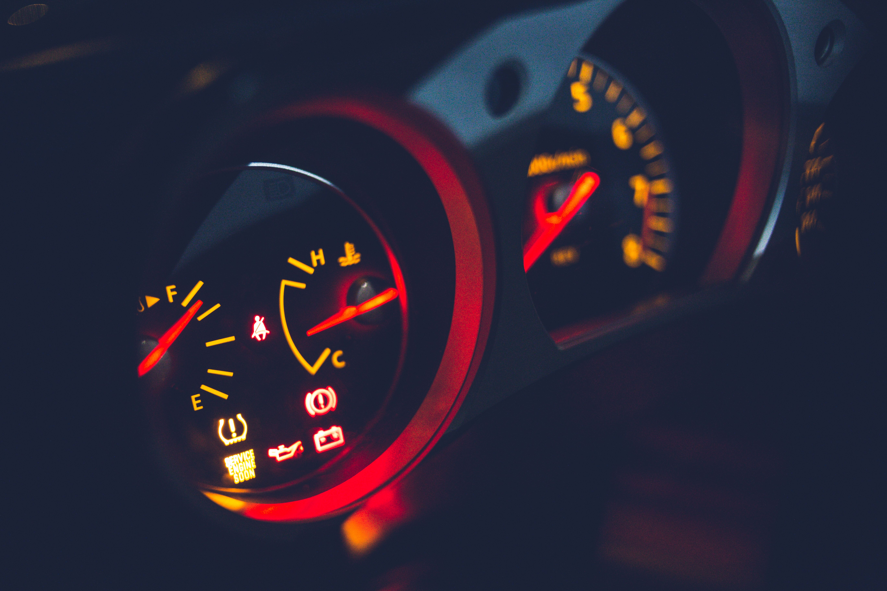

Why Is My Engine Making a Ticking Noise at Idle?
An engine ticking noise at idle is most commonly caused by low engine oil level or low oil pressure, a stuck hydraulic valve lifter, normal high-pressure fuel injector clicking, or a minor exhaust manifold leak. Always check your dipstick first, as low oil is the easiest and most critical issue to fix.

Top 5 Causes of Engine Ticking at Idle
A rhythmically ticking sound coming from the engine compartment when stopped at a red light or sitting in park can range from normal operational noise to an early sign of component failure. Here are the primary culprits:
1. Low Engine Oil Level or Poor Oil Pressure
Hydraulic valve lifters rely on a steady flow of pressurized oil to maintain tension against the valvetrain. When oil levels drop or the oil pump weakens, air enters the lifters, causing them to collapse slightly and produce a rapid metallic ticking noise at idle.
2. Sticky or Faulty Hydraulic Lifters
Even with proper oil levels, sludge buildup inside hydraulic lifters can prevent oil from entering internal check valves. A "sticky" lifter creates excess clearance in the valvetrain, resulting in a persistent top-end tick that matches engine RPM.
3. Direct Fuel Injectors (Normal Operation)
Modern direct-injection (GDI) engines operate at extreme pressures (up to 2,000+ PSI). The rapid opening and closing of high-pressure solenoid injectors creates a high-frequency clicking or ticking sound that is completely normal and particularly audible at idle.
4. Exhaust Manifold Leak
A cracked exhaust manifold or a blown manifold gasket lets pressurized exhaust gases escape in sharp bursts. This hot gas pulse sounds strikingly like a sharp metallic tick, especially when the engine is cold and metal components haven't expanded yet.
5. Worn Spark Plugs or Loose Fitment
If a spark plug is slightly loose in its cylinder head thread, combustion gas can bypass the seal, creating a subtle ticking or popping sound. Additionally, arcing from worn ignition wires can sound like a faint electric click.
How to Diagnose the Source of the Ticking
You can isolate the noise using a mechanic's stethoscope or a long screwdriver pressed carefully against non-moving engine parts:
- Top of Valve Cover: Indicates valvetrain issue (lifters, rocker arms, or camshafts).
- Fuel Rail / Injectors: Indicates normal GDI injector clicking.
- Exhaust Manifold Area: Indicates a leaking manifold gasket or cracked manifold.
Frequently Asked Questions
If caused by low oil or a worn lifter, ignoring it can lead to severe engine damage. If caused by direct injectors, it is completely harmless.
If the tick is caused by low oil level, degraded viscosity, or minor lifter sludge, a fresh oil change with the correct oil weight can resolve the issue immediately.